Curation of my favorite cosplay photos! Most recent first.
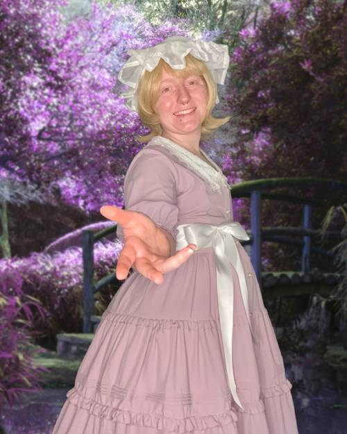Maribel Hearn from the Touhou Project CDs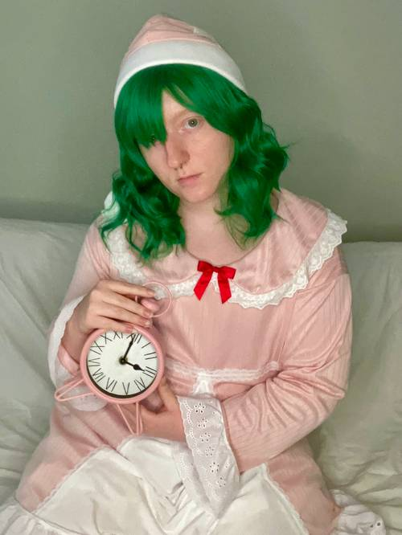Yuuka Kazami from Touhou: Lotus Land Story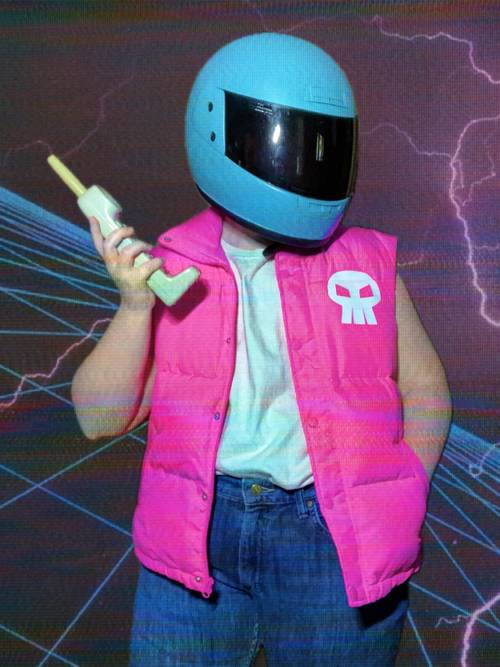Biker from Hotline Miami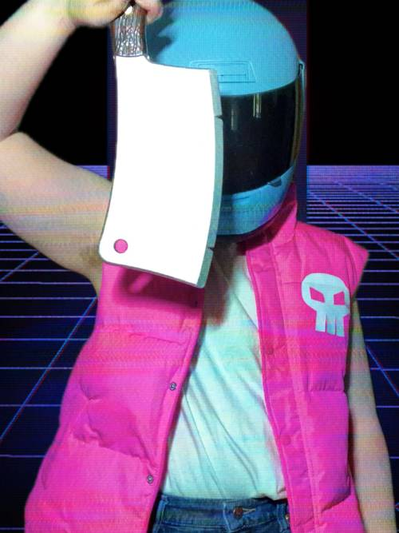Biker from Hotline Miami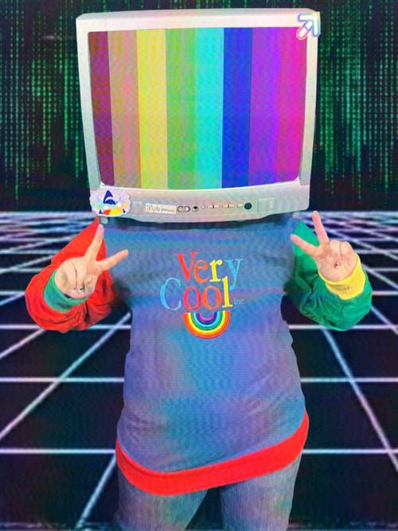TV Head, original character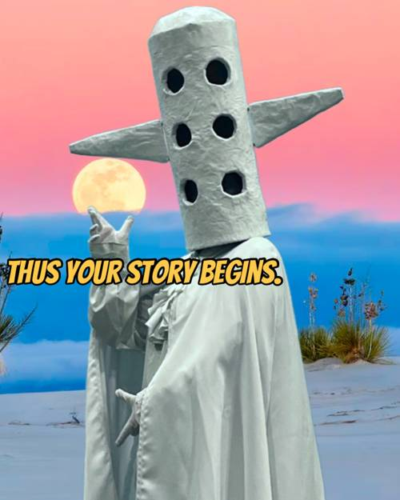Dracula from Hylics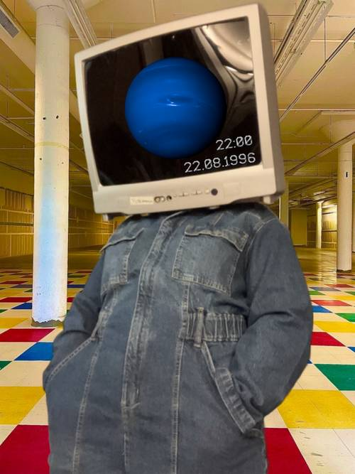TV Head, original character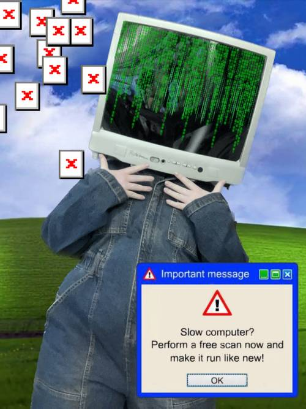TV Head, original character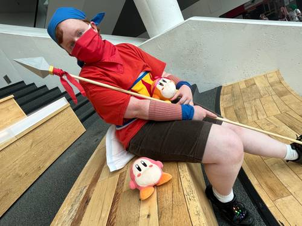Bandana Dee from Kirby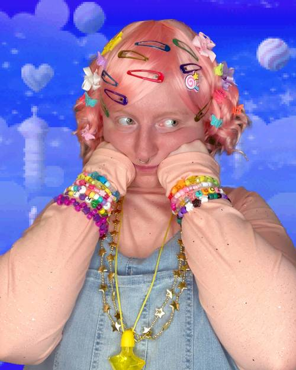Decora Kirby design from the Kirby games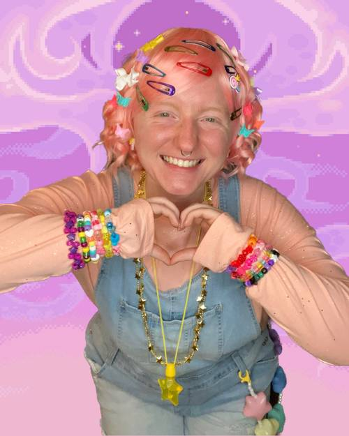Decora Kirby design from the Kirby games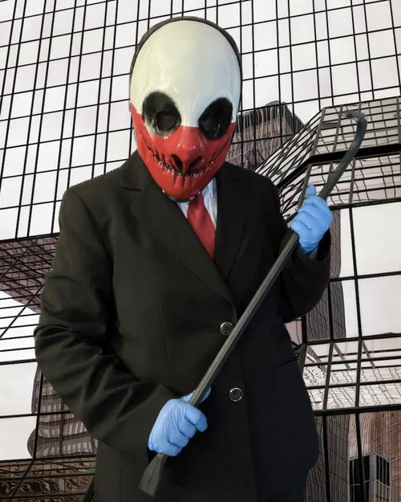Wolf from Payday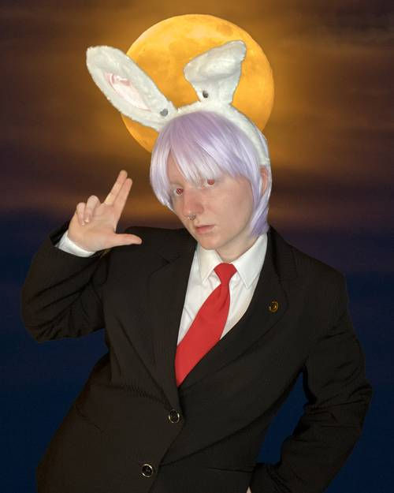Masculine Reisen Undongein Inaba design from Touhou: Imperishable Night